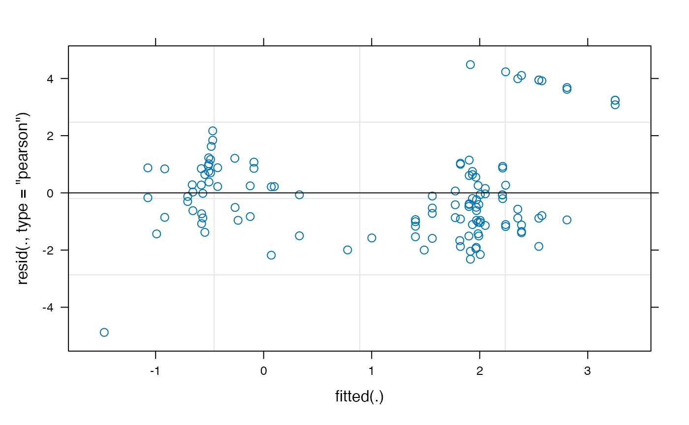

vignettes/window_analysis_vignette.Rmd
window_analysis_vignette.RmdOur Experiment: Each eyetrackingR vignette uses the eyetrackingR package to analyze real data from a simple 2-alternative forced choice (2AFC) word recognition task administered to 19- and 24-month-olds. On each trial, infants were shown a picture of an animate object (e.g., a horse) and an inanimate object (e.g., a spoon). After inspecting the images, they disappeared and they heard a label referring to one of them (e.g., “The horse is nearby!”). Finally, the objects re-appeared on the screen and they were prompted to look at the target (e.g., “Look at the horse!”).
In this vignette, we want to take an initial look at our data and perform the most fundamental eye-tracking analysis there is: a window analysis. This allows us to ascertain whether, in a certain window, infants looked more to the ‘animate’ when it was named than when the ‘inanimate’ was named.
Before performing this analysis, we’ll need to prepare and clean our dataset. Here we will to do this quickly and with few notes but, for more information, see the vignette on preparing your data.
## Loading required package: dplyr##
## Attaching package: 'dplyr'## The following objects are masked from 'package:stats':
##
## filter, lag## The following objects are masked from 'package:base':
##
## intersect, setdiff, setequal, union
data("word_recognition")
data <- make_eyetrackingr_data(word_recognition,
participant_column = "ParticipantName",
trial_column = "Trial",
time_column = "TimeFromTrialOnset",
trackloss_column = "TrackLoss",
aoi_columns = c('Animate','Inanimate'),
treat_non_aoi_looks_as_missing = TRUE
)
# subset to response window post word-onset
response_window <- subset_by_window(data,
window_start_time = 15500,
window_end_time = 21000,
rezero = FALSE)## Avg. window length in new data will be 5500
# remove trials with > 25% of trackloss
response_window_clean <- clean_by_trackloss(data = response_window,
trial_prop_thresh = .25)## Performing Trackloss Analysis...## Will exclude trials whose trackloss proportion is greater than : 0.25## ...removed 33 trials.Here, we’ll inspect the descriptive statistics for our data, and make some initial visualizations just to make sure everything is in order. We basically want a glance at each subject’s looking to the Animate for each condition. To do so, we’ll:
describe_data function to generate a quick data summary (telling us the means and variance within each Target condition for each subject, and the number of trials contributed after cleaning above), and
(data_summary <- describe_data(response_window_clean,
describe_column='Animate', group_columns=c('Target','ParticipantName')))## # A tibble: 54 × 10
## Target ParticipantName Mean SD LowerQ UpperQ Min Max N NumTrials
## <fct> <fct> <dbl> <dbl> <dbl> <dbl> <int> <int> <int> <int>
## 1 Animate ANCAT18 0.359 0.481 0 1 0 1 330 1
## 2 Animate ANCAT22 0.791 0.407 0 1 0 1 990 3
## 3 Animate ANCAT23 0.815 0.388 0 1 0 1 1320 4
## 4 Animate ANCAT26 0.699 0.459 0 1 0 1 660 2
## 5 Animate ANCAT39 0.880 0.325 0 1 0 1 1320 4
## 6 Animate ANCAT45 0.715 0.452 0 1 0 1 660 2
## 7 Animate ANCAT50 0.896 0.306 0 1 0 1 660 2
## 8 Animate ANCAT53 0.727 0.446 0 1 0 1 660 2
## 9 Animate ANCAT55 0.955 0.208 0 1 0 1 990 3
## 10 Animate ANCAT58 0.855 0.352 0 1 0 1 1320 4
## # … with 44 more rows
plot(data_summary)The first way to ask our question is to get a single mean proportion score (of looking to the Animate AOI) for each Target condition (Animate, Inanimate) for each subject and perform a paired t-test.
To do so, we will use the make_time_window_data function to aggregate by participant and calculate this mean value. We also specify a couple additional predictors (Age, MCDI_Total [vocabulary score]) that we will use in a follow-up analysis.
Note that the dataframe returned by make_time_window_data will actually give us a few different dependent variables to choose from:
Prop – The mean of raw proportion-lookingLogitAdjusted – The logit is defined as log( Prop / (1 - Prop) ). This transformation attempts to map bounded 0,1 data to the real number line. Unfortunately, for data that is exactly 0 or 1, this is undefined. One solution is add a very small value to any datapoints that equal 0, and subtract a small value to any datapoints that equal 1 (we use 1/2 the smallest nonzero value for this adjustment).Elog – Another way of calculating a corrected logit transformation is to add a small value epsilon to both the numerator and denominator of the logit equation (we use 0.5).ArcSin – The arcsine-root transformation of the raw proportions, defined as asin(sqrt(Prop)).While the first DV is the most intuitive, you might consider using the others to account for the bounded nature of proportions. The boundedness of proportions is an issue because it can mean that CI’s around your estimates fall above 1 or below 0 (which is not possible) and that there is an inherent link between group means and variance (means closer to 0 and 1 will necessarily have lower variance than means around .5). These are violations of many parametric models, such as OLS regression and t-tests.
(EyetrackingR also lets you specify any arbitrary DV aside from the above. For example, you could analyze mean pupil-dilation by supplying a column name to the other_dv_columns argument. This is true for make_time_sequence_data as well.)
We will start out by using the ArcSin DV.
# aggregate by subject across the response window
response_window_agg_by_sub <- make_time_window_data(response_window_clean,
aois='Animate',
predictor_columns=c('Target','Age','MCDI_Total'),
summarize_by = "ParticipantName")
# take a quick peek at data
plot(response_window_agg_by_sub, predictor_columns="Target", dv = "ArcSin")
# show condition means
describe_data(response_window_agg_by_sub, describe_column = "ArcSin", group_columns = "Target")## # A tibble: 2 × 8
## Target Mean SD LowerQ UpperQ Min Max N
## <fct> <dbl> <dbl> <dbl> <dbl> <dbl> <dbl> <int>
## 1 Animate 1.08 0.206 0.653 1.43 0.643 1.57 27
## 2 Inanimate 0.692 0.248 0.186 1.08 0 1.14 27
# simple paired t-test between conditions
t.test(ArcSin ~ Target, data= response_window_agg_by_sub, paired=TRUE)##
## Paired t-test
##
## data: ArcSin by Target
## t = 7.2705, df = 26, p-value = 1.012e-07
## alternative hypothesis: true difference in means is not equal to 0
## 95 percent confidence interval:
## 0.2803975 0.5014410
## sample estimates:
## mean of the differences
## 0.3909192That t-test looks pretty good. But we also want to know whether this effect of Target is mediated by age and vocabulary. To do so, we can fit a quick linear model:
# you should almost always sum-code and center your predictors when performing regression analyses
response_window_agg_by_sub$AgeC <- response_window_agg_by_sub$Age - mean(response_window_agg_by_sub$Age)
response_window_agg_by_sub$MCDI_TotalC <- response_window_agg_by_sub$MCDI_Total - mean(response_window_agg_by_sub$MCDI_Total)
model <- lm(ArcSin ~ Target*AgeC*MCDI_TotalC, data=response_window_agg_by_sub)
summary(model)##
## Call:
## lm(formula = ArcSin ~ Target * AgeC * MCDI_TotalC, data = response_window_agg_by_sub)
##
## Residuals:
## Min 1Q Median 3Q Max
## -0.43847 -0.14408 -0.01695 0.14882 0.48809
##
## Coefficients:
## Estimate Std. Error t value Pr(>|t|)
## (Intercept) 1.0775721 0.0462383 23.305 < 2e-16 ***
## TargetInanimate -0.4054232 0.0653909 -6.200 1.45e-07 ***
## AgeC 0.0315232 0.0413260 0.763 0.449
## MCDI_TotalC -0.0014167 0.0033328 -0.425 0.673
## TargetInanimate:AgeC -0.0012671 0.0584438 -0.022 0.983
## TargetInanimate:MCDI_TotalC -0.0040145 0.0047133 -0.852 0.399
## AgeC:MCDI_TotalC 0.0009042 0.0025599 0.353 0.726
## TargetInanimate:AgeC:MCDI_TotalC 0.0024107 0.0036202 0.666 0.509
## ---
## Signif. codes: 0 '***' 0.001 '**' 0.01 '*' 0.05 '.' 0.1 ' ' 1
##
## Residual standard error: 0.2265 on 46 degrees of freedom
## Multiple R-squared: 0.5045, Adjusted R-squared: 0.4291
## F-statistic: 6.691 on 7 and 46 DF, p-value: 1.777e-05This linear model shows no main effects or interactions of Target with those predictors, but confirms the large effect of Target.
A more rigorous approach is not to aggregate by participants but, instead, to aggregate by trials within participants and fit a linear mixed-effects model using lme4’s lmer function. This predicts infants’ looking to the Animate AOI based on the Target condition of each trial while accounting for random intercepts and slope across Trial (i.e., items) and ParticipantName (i.e., subjects).
Here, for demonstration’s sake, we’ll predict the Elog transformed DV.
Note that the make_time_window_data call no longer summarizes by Participant. When the summarize_by argument is not passed, this function will default to summarizing by trials within participants.
response_window_agg <- make_time_window_data(response_window_clean,
aois='Animate',
predictor_columns=c('Target','Age','MCDI_Total'))
# sum-code and center predictors
response_window_agg$TargetC <- ifelse(response_window_agg$Target == 'Animate', .5, -.5)
response_window_agg$TargetC <- as.numeric(scale(response_window_agg$TargetC, center=TRUE, scale=FALSE))
# mixed-effects linear model on subject*trial data
model_time_window <- lmer(Elog ~ TargetC + (1 + TargetC | Trial) + (1 | ParticipantName),
data = response_window_agg, REML = FALSE)## boundary (singular) fit: see ?isSingular
# cleanly show important parts of model (see `summary()` for more)
(est <- broom.mixed::tidy(model_time_window, effects="fixed"))## # A tibble: 2 × 5
## effect term estimate std.error statistic
## <chr> <chr> <dbl> <dbl> <dbl>
## 1 fixed (Intercept) 1.15 0.206 5.57
## 2 fixed TargetC 2.48 0.323 7.66
# use model comparison to attain p-values
drop1(model_time_window,~.,test="Chi")## Single term deletions
##
## Model:
## Elog ~ TargetC + (1 + TargetC | Trial) + (1 | ParticipantName)
## npar AIC LRT Pr(Chi)
## <none> 505.40
## TargetC 1 512.35 8.9491 0.002776 **
## ---
## Signif. codes: 0 '***' 0.001 '**' 0.01 '*' 0.05 '.' 0.1 ' ' 1Those results look very much in line with the results of the simple t-test, though they are slightly more conservative.
The estimates from lmer can be interpreted as follows:
Because we sum-coded our TargetC predictor before fitting the model, we can calculate the looking to the Animate in the Animate target condition by taking the intercept estimate, +/- the slope estimate divided by two.
condition_estimate <- with(est,
c(estimate[term=="(Intercept)"] + estimate[term=="TargetC"] / 2,
estimate[term=="(Intercept)"] - estimate[term=="TargetC"] / 2))And we can convert that back into a proportion value by reversing the transformation into log-odds:
## [1] 0.9155565 0.4767013You might notice that these are higher than we might have expected, based on the raw proportions (the actual proportion-looking for the animate condition was closer to .80). This could suggest our choice of transformation (empirical logit) was problematic. It’s important to choose a transformation that satisfies the assumptions of the model we are using. We can plot the fitted vs. residuals of our model using the plot method for lmer:
plot(model_time_window)
The empirical-logit transformation appears to have created some problematic outliers, so we might want to consider another transformation, such as the adjusted logit.
model_time_window_logit <- lmer(LogitAdjusted ~ TargetC + (1 + TargetC | Trial) + (1 | ParticipantName),
data = response_window_agg, REML = FALSE)## boundary (singular) fit: see ?isSingular
plot(model_time_window_logit)
drop1(model_time_window_logit,~.,test="Chi")## Single term deletions
##
## Model:
## LogitAdjusted ~ TargetC + (1 + TargetC | Trial) + (1 | ParticipantName)
## npar AIC LRT Pr(Chi)
## <none> 382.11
## TargetC 1 389.80 9.6917 0.001851 **
## ---
## Signif. codes: 0 '***' 0.001 '**' 0.01 '*' 0.05 '.' 0.1 ' ' 1
est_logit <- broom.mixed::tidy(model_time_window_logit, effects="fixed")
condition_estimate_logit <- with(est_logit,
c(estimate[term=="(Intercept)"] + estimate[term=="TargetC"] / 2,
estimate[term=="(Intercept)"] - estimate[term=="TargetC"] / 2))
exp(condition_estimate_logit)/(1+exp(condition_estimate_logit))## [1] 0.8620136 0.4741567See Wharton & Hui (2011) for more discussion of these issues.
We can also throw in some additional predictors to the model, as we did above, so long as we specified these columns when we called make_time_window_data. Here we will look at the effect of Age and MCDI_Total (after centering, of course):
response_window_agg$AgeC <- response_window_agg$Age - mean(response_window_agg$Age)
response_window_agg$MCDI_TotalC <- response_window_agg$MCDI_Total - mean(response_window_agg$MCDI_Total)
model_time_window_add_predictors <- lmer(Elog ~ TargetC*AgeC*MCDI_TotalC + (1 + TargetC | Trial) + (1 | ParticipantName),
data = response_window_agg, REML = FALSE)## boundary (singular) fit: see ?isSingular
# cleanly show important parts of model (see `summary()` for more)
broom.mixed::tidy(model_time_window_add_predictors, effects="fixed")## # A tibble: 8 × 5
## effect term estimate std.error statistic
## <chr> <chr> <dbl> <dbl> <dbl>
## 1 fixed (Intercept) 1.14 0.201 5.66
## 2 fixed TargetC 2.74 0.353 7.77
## 3 fixed AgeC 0.229 0.173 1.32
## 4 fixed MCDI_TotalC -0.0336 0.0145 -2.33
## 5 fixed TargetC:AgeC 0.0802 0.303 0.265
## 6 fixed TargetC:MCDI_TotalC -0.00126 0.0252 -0.0498
## 7 fixed AgeC:MCDI_TotalC 0.00263 0.0106 0.249
## 8 fixed TargetC:AgeC:MCDI_TotalC -0.0296 0.0183 -1.62
# use model comparison to attain p-values
drop1(model_time_window_add_predictors,~.,test="Chi")## boundary (singular) fit: see ?isSingular
## boundary (singular) fit: see ?isSingular
## boundary (singular) fit: see ?isSingular
## boundary (singular) fit: see ?isSingular
## boundary (singular) fit: see ?isSingular
## boundary (singular) fit: see ?isSingular
## boundary (singular) fit: see ?isSingular## Single term deletions
##
## Model:
## Elog ~ TargetC * AgeC * MCDI_TotalC + (1 + TargetC | Trial) +
## (1 | ParticipantName)
## npar AIC LRT Pr(Chi)
## <none> 509.26
## TargetC 1 516.59 9.3312 0.002253 **
## AgeC 1 508.95 1.6957 0.192848
## MCDI_TotalC 1 512.14 4.8815 0.027146 *
## TargetC:AgeC 1 507.33 0.0695 0.792084
## TargetC:MCDI_TotalC 1 507.26 0.0025 0.960331
## AgeC:MCDI_TotalC 1 507.32 0.0620 0.803385
## TargetC:AgeC:MCDI_TotalC 1 509.85 2.5966 0.107095
## ---
## Signif. codes: 0 '***' 0.001 '**' 0.01 '*' 0.05 '.' 0.1 ' ' 1Here we do see an effect of MCDI_Total (the participants’ productive vocabulary): participants with larger vocabularies looked less to the Animate overall (regardless of Target).
For more of a basic introduction to linear mixed-effects models, covering topics like p-values, confidence intervals, estimates, interpreting random effects, and logistic regression, see this tutorial.
For more information on the empirical-logit transformation, see Barr (2008).
For more information on the dangers of analyzing raw proportion means, see Dixon (2008) and Jaeger (2008).
It is important to consider what we are losing in a window analysis. By collapsing across time within trials or subjects, we are completely removing the greatest asset of eye-tracking data: time. This can mask important properties of our data. Therefore, while window analyses are attractive in terms of parsimony and computational demands – and are often a necessary first step – other analyses may allow you to better understand and report your data.
Barr, D. J. (2008). Analyzing “visual world” eyetracking data using multilevel logistic regression. Journal of Memory and Language, 59, 457–474. https://doi.org/10.1016/j.jml.2007.09.002
Dixon, P. (2008). Models of accuracy in repeated-measures designs. Journal of Memory and Language, 59(4), 447–456. https://doi.org/10.1016/j.jml.2007.11.004
Jaeger, T. F. (2008). Categorical data analysis: Away from ANOVAs (transformation or not) and towards logit mixed models. Journal of Memory and Language, 59(434-446). https://doi.org/10.1016/j.jml.2007.11.007
Warton, D. I., & Hui, F. K. (2011). The arcsine is asinine: the analysis of proportions in ecology. Ecology, 92(1), 3-10.